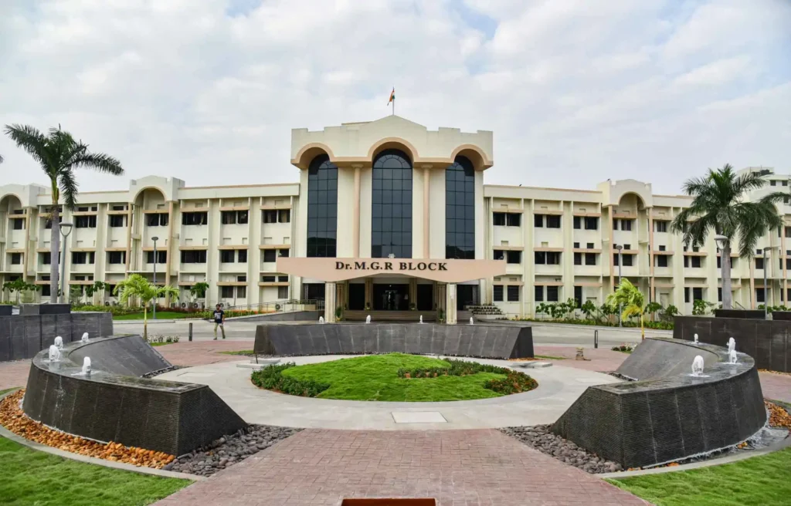
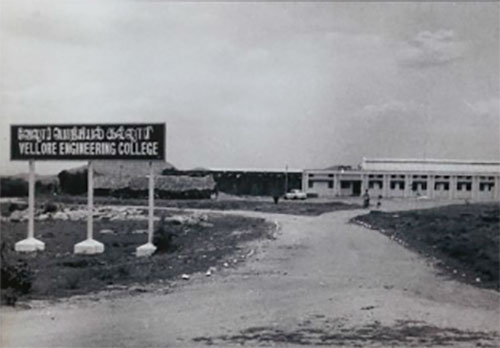
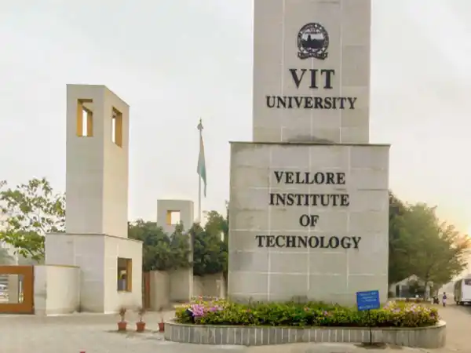

VIT was established with the aim of providing quality higher education on par with
international
standards. It persistently seeks and adopts innovative methods to
improve the quality of higher
education on a consistent basis.The campus has a
cosmopolitan atmosphere with students from all
corners of the globe. Experienced
and learned teachers are strongly encouraged to nurture the
students. The global
standards set at VIT in the field of teaching and research spur us on in our
relentless
pursuit of excellence. In fact, it has become a way of life for us. The highly
motivated
youngsters on the campus are a constant source of pride. Our Memoranda of
Understanding with various international universities are our major strength. They
provide for an
exchange of students and faculty and encourage joint research projects
for the mutual benefit of
these universities.Many of our students, who pursue their
research projects in foreign universities,
bring high quality to their work and esteem
to India and have done us proud. With steady steps, we
continue our march forward.
We look forward to meeting you here at VIT.



It was established under Section 3 of the University Grants Commission
(UGC) Act, 1956, and was founded
in 1984 as a self-financing institution
called the Vellore Engineering College. The Union Ministry of
Human
Resources Development conferred University status on Vellore
Engineering College in 2001. The
University is headed by its founder and
Chancellor, Dr. G. Viswanathan, a former Parliamentarian and
Minister in
the Tamil Nadu Government. In recognition of his service to India in
offering world class
education, he was conferred an honorary doctorate
by the West Virginia University, USA. Mr.Sankar
Viswanathan, Dr.Sekar
Viswanathan and Dr.G.V. Selvam are the Vice-Presidents; Dr. V. S.
Kanchana
Bhaaskaran is the Vice-Chancellor and Dr. Partha Sharathi
Mallick is the Pro-Vice Chancellor.
GRADE BY NAAC,
MHRD
Foreign adjunct
professors
International
Partners
Eco friendly campus
with over 62 lakh sq
Rank in the world in
Engineering